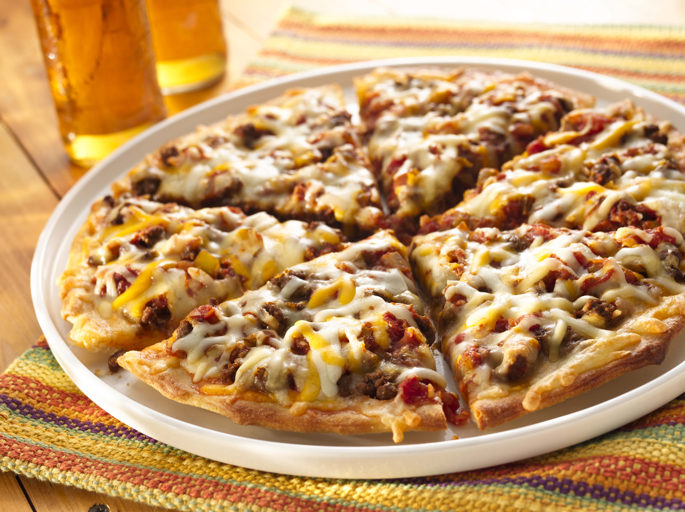

MEXICAN PIZZA

This Mexican pizza recipe layers delicious seasoned ground beef and refried beans between two crisp tortillas. Top with salsa, cheese, tomatoes, and jalapeño for incredible flavor in every bite!
Ingredients :
- ½ pound ground beef
- 1 medium onion , diced
- 1 clove garlic , minced
- 1 tablespoon chilli powder
- 1 teaspoon ground cumin
- ½ teaspoon paprika
- ½ teaspoon salt
- ½ teaspoon black pepper
- 1 (16 ounce) can refried beans
- 4 (10 inch) flour tortillas
- ½ cup salsa
- 1 cup shredded Cheddar cheese
- 1 cup shredded Monterey Jack cheese
- 2 green onions, chopped
- 2 tomatoes, diced
- ¼ cup thinly sliced jalapeño pepper
- ¼ cup sour cream (Optional)
Steps
- Preheat the oven to 350 degrees F (175 degrees C). Coat 2 pie plates with non-stick cooking spray.
- Place ground beef, onion, and garlic in a skillet over medium heat. Cook until beef is evenly browned and crumbly, 5 to 7 minutes. Drain and discard grease. Season beef with chili powder, cumin, paprika, salt, and pepper.
- Lay one tortilla in each pie plate, and cover with a layer of refried beans. Spread 1/2 of the seasoned ground beef over each one, and then cover with a second tortilla. Bake in the preheated oven until tortillas are crisp, about 10 minutes.
- Remove pizzas from the oven and set aside to cool slightly. Then spread 1/2 of the salsa over each top tortilla. Cover each pizza with 1/2 of the Cheddar and Monterey Jack cheeses. Place 1/2 of the tomatoes, 1/2 of the green onions, and 1/2 of the jalapeño slices onto each one.
- Return pizzas to the oven and bake until cheese is melted, about 5 to 10 more minutes. Let pizzas cool slightly before slicing each one into 4 pieces.
Nutrition Facts
(per serving)
- 370 Calories
- 19g Fat
- 32g Carbs
- 20g Protein